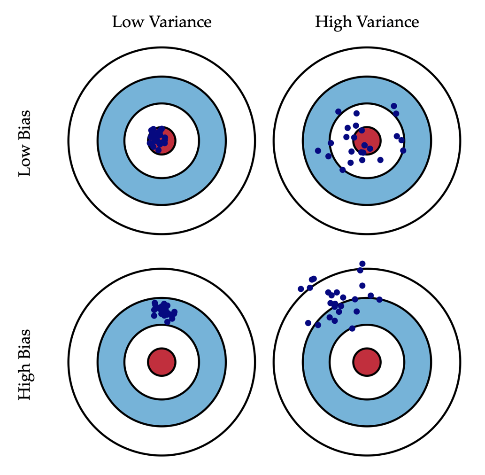
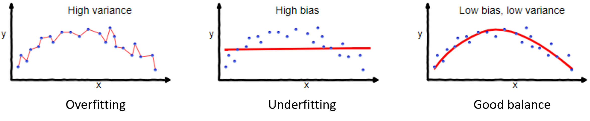
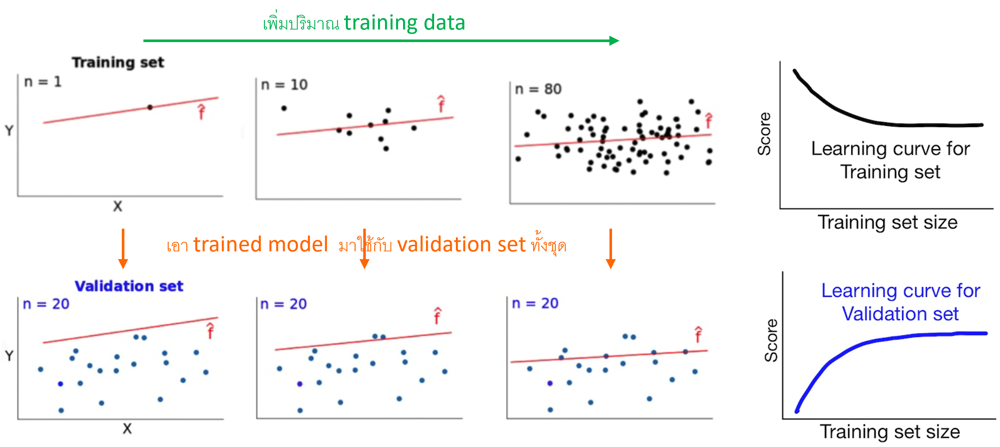
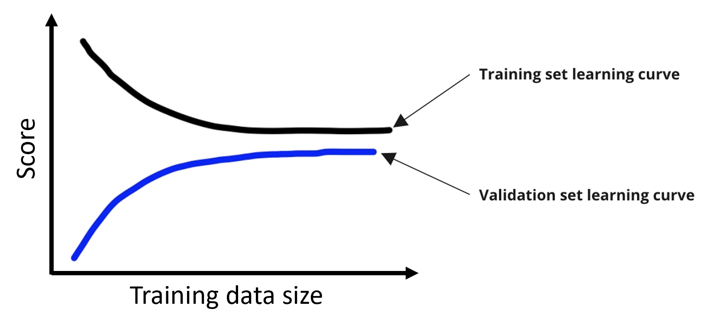
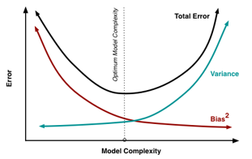
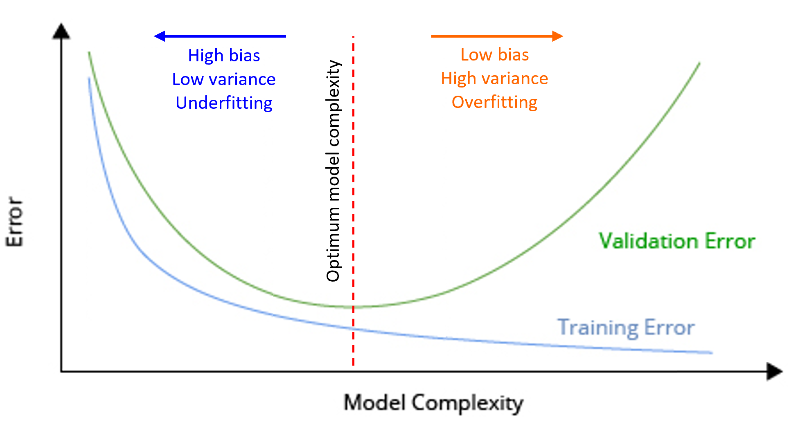

Overfitting and Underfitting#
import numpy as np
import pandas as pd
import matplotlib.pyplot as plt
from sklearn.model_selection import train_test_split
from sklearn.metrics import mean_squared_error
from sklearn.linear_model import LinearRegression
from sklearn.neighbors import KNeighborsRegressor
Bias and variance#
Bias = ระยะห่างจากเป้าหมาย
Variance = กระกระจายตัวของข้อมูล

Overfitting and underfitting#
Overfitting = model fit high-variance data
Underfitting = ข้อมูลอยู่ไกลจาก predicted value (high bias)

Learning curves#
Learning curve เป็นกราฟระหว่าง score กับ training set size ถูกสร้างขึ้นเพื่อตรวจสอบว่า model หนึ่ง overfit/underfit หรือไม่ หรือมี training data เพียงพอหรือไม่
Score สูง ไม่จำเป็นต้องดีกว่า ขึ้นกับ metric ที่ใช้ ในที่นี้ เราจะให้ score คือ precision ดังนั้น score สูง แสดงว่าดี (error ต่ำ)

เมื่อ training data size มากขึ้น training score ควรจะลดลง validation score ควรจะเพิ่มขึ้น และทั้งสองควร converge (ถ้าไม่ converge แสดงว่า training data ไม่มากพอ)

# Thanks Cedric John for data
# The data are already cleaned, have no duplicated/missing values
# and have been normalised (except for our target (porosity)).
# Import data
data = pd.read_csv('../data/core_data.csv')
data
| Depth CSF-A (m) | NGR total counts (cps) | Reflectance L* | Reflectance a* | Reflectance b* | Porosity (vol%) | |
|---|---|---|---|---|---|---|
| 0 | 0.000000 | 0.251540 | 0.364557 | 0.225914 | 0.470866 | 57.000000 |
| 1 | 0.000000 | 0.217357 | 0.496203 | 0.358804 | 0.341732 | 79.900000 |
| 2 | 0.000057 | 0.249050 | 0.426582 | 0.415282 | 0.407874 | 64.100000 |
| 3 | 0.000062 | 0.266326 | 0.469620 | 0.465116 | 0.444094 | 54.900000 |
| 4 | 0.000062 | 0.254531 | 0.417722 | 0.528239 | 0.516535 | 73.600000 |
| ... | ... | ... | ... | ... | ... | ... |
| 5028 | 0.997032 | 0.090944 | 0.334177 | 0.318937 | 0.308661 | 11.900000 |
| 5029 | 0.998196 | 0.092910 | 0.772152 | 0.252492 | 0.366929 | 11.800000 |
| 5030 | 0.998389 | 0.079482 | 0.379747 | 0.275748 | 0.354331 | 11.433333 |
| 5031 | 0.998555 | 0.117835 | 0.440506 | 0.239203 | 0.360630 | 19.200000 |
| 5032 | 1.000000 | 0.043440 | 0.248101 | 0.325581 | 0.305512 | 13.466667 |
5033 rows × 6 columns
# Data pre-processing
# Separate features (X) and target (y)
X, y = data.drop(columns="Porosity (vol%)"), data["Porosity (vol%)"]
# Train-test split
X_train, X_test, y_train, y_test = train_test_split(X, y, train_size=.7, random_state=42)
# Train-val split
X_train, X_val, y_train, y_val = train_test_split(X_train, y_train, train_size=.8, random_state=42)
# Define a function for plotting learning curves
def plot_learning_curve(model, X_train, X_val, y_train, y_val):
train_RMSEs, val_RMSEs, num_training_samples = [], [], []
# Loop to increase every 10 training samples
for i in range(1, int(np.floor(len(X_train)/10))):
# Prepare training samples
X_10i = X_train[:i*10]
y_10i = y_train[:i*10]
num_training_samples.append(i*10)
# Predict on training samples and validation set by a KNN regressor
lr = model.fit(X_10i, y_10i)
y_train_pred = lr.predict(X_10i)
y_val_pred = lr.predict(X_val)
# Store training and validation RMSEs
train_RMSEs.append(np.sqrt(mean_squared_error(y_10i, y_train_pred)))
val_RMSEs.append(np.sqrt(mean_squared_error(y_val, y_val_pred)))
fig, ax = plt.subplots(figsize=(8, 5))
ax.plot(num_training_samples, train_RMSEs, label="Training RMSE")
ax.plot(num_training_samples, val_RMSEs, label="Validation RMSE")
ax.set(xlabel="The number of training samples", ylabel="RMSE", title=f"The learning curve of {model}")
ax.legend();
# Plot learning curve of a default linear regressor
plot_learning_curve(LinearRegression(), X_train, X_val, y_train, y_val)
# Plot learning curve of a default KNN regressor
# The number of neighbors (n_neighbors) is 5 by default
plot_learning_curve(KNeighborsRegressor(), X_train, X_val, y_train, y_val)
Bias-variance tradeoff#
เมื่อนำ trained model ไปใช้กับ (unseen) test set จะมี error เกิดขึ้น โดยที่

model ที่ดีที่สุดควรจะมี total error ต่ำสุด (อยู่ที่ elbow ใน elbow curve)

# Plot elbow curve of a KNN regressor to find the optimum number of neighbours (K)
val_RMSEs = []
for k in range(1, 30):
model = KNeighborsRegressor(n_neighbors=k).fit(X_train, y_train)
y_val_pred = model.predict(X_val)
val_RMSEs.append(np.sqrt(mean_squared_error(y_val, y_val_pred)))
fig, ax = plt.subplots(figsize=(8, 5))
ax.plot(list(range(1, 30)), val_RMSEs, '.-', c='r')
ax.set(xlabel='K', ylabel="RMSE", title=f"The elbow curve of KNN models")
print("The best K is", val_RMSEs.index(min(val_RMSEs))+1)
The best K is 10